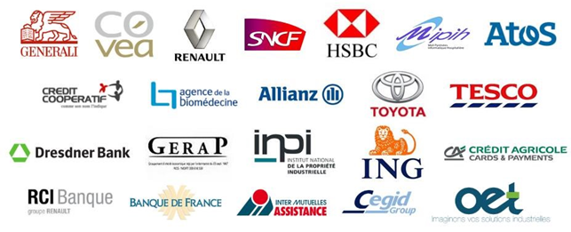
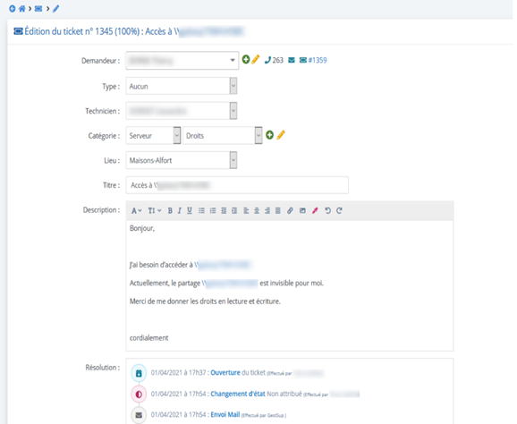
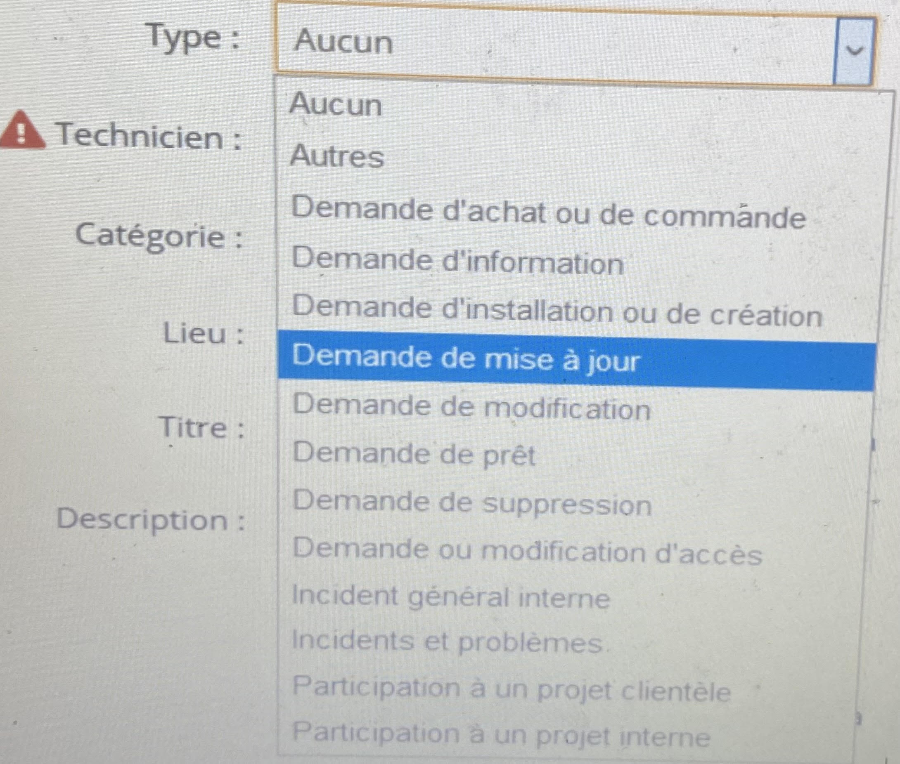
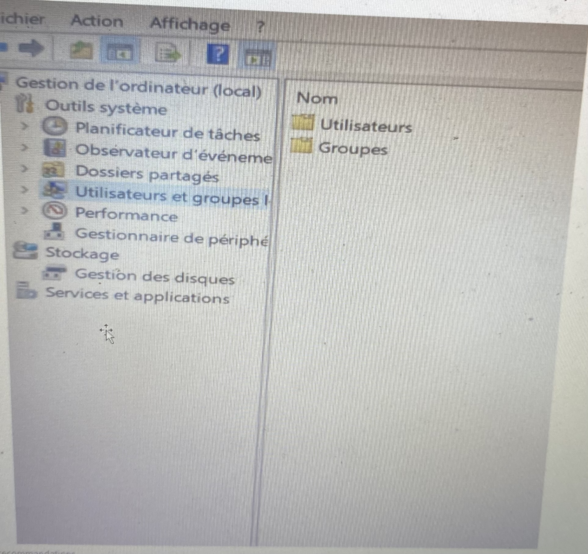

I) Présentation de l'entreprise
Nat System
L’entreprise Nat Systèmes a été créée en 1987 et s’est spécialisée dans la création d’outils de développement permettant de concevoir des applications sur‐mesure.
Nat Systèmes sera aussi à l’origine du développement des premières versions du célèbre logiciel de l’entreprise de Microsoft Corporation : Microsoft Visual C++ aussi connu sous le nom Microsoft Visual.
Aujourd’hui, les deux pôles de Nat System se situent à Niort et Maisons-Alfort, et regroupent une centaine d’employés, principalement des développeurs, œuvrant pour le compte de clients de tout secteur d’activité (banque, finance, industrie, télécommunication, services et secteur public).
Chiffres clefs
90
collaborateurs400
Clients en Europe30
années d'expérienceRéférence clients

Organigramme

II) Missions
Traitement des incidents, aide a l'utilisateur
Les utilisateurs confrontés à un problème se doivent de remplir un ticket d’incident. C’est par l’outil de Ticketing GestSup, que nous répondons et résolvons leurs demandes.
Exemple d’un incident :
Il peut y avoir plusieurs types :

Préparation d'ordinateur
Durant mes semaines de stage, une de mes missions consistait de préparer des dizaines d’ordinateurs neufs pour des personnes de l’entreprise (des développeurs…). Nat System est composé majoritairement de matériel Dell. Dans chaque ordinateur, il faut installer l’application FortiClient VPN : les collaborateurs chez le client et en télétravail peuvent se connecter au réseau Nat System grâce au client VPN Forticlient. Un fichier de configuration propre à la configuration de Nat System est nécessaire pour son bon fonctionnement. Sur les PC des développeurs, il fallait aussi donner les droits d’Administrateur, pour qu’il dispose d’un accès complet et illimité à l’ordinateur et au domaine.

III) Conclusion
Cette première expérience, au cœur du monde du travail m’a permis de me confronter aux différents défis que posent le milieu professionnel. Ces enjeux dont je n’avais pas profondément pris en conscience. Durant ces cinq semaines, au sein de l’entreprise Nat System, j’ai pu réaliser diverses taches comme : la mise en réseau des postes, résoudre différents problèmes des utilisateurs...
I) Présentation de l'entreprise
Tech Advising
L’entreprise Tech-Advising a été créée en 2016 par Aviel Goldenberg. Filiale de Tech Group, Tech Advising est une société de conseil et de développement de solutions informatiques spécialisée dans le domaine des nouvelles technologies.
Elle comprend aujourd’hui une équipe d’une dizaine de collaborateurs gérant le développement web, le graphisme et la partie marketing et commerciale.
Tech Advising développe aussi pour ses clients des sites Web et applications ainsi que des solutions notamment de gestion de clients, de SAV et autres pour aider les entreprises à développer leur productivité :
Elle possède aujourd’hui un parc d’environ 200 clients de différents secteurs d’activité comme la télécommunication, l’architecture, le service, le commerce, le BTP, la formation, le transport, l’hôtellerie et s’adresse à tous types de clientèle.
II) Projet
Pendant le stage, je devais créer un site internet pour un client de l’entreprise(Premium Power).
Pour la création du site, j’ai utilisé Wordpress.

Accueil
Slide

Décret tertiaire

Audit énergetique
Formulaire
Footer
III) Conclusion
Durant ces semaines, au sein de l’entreprise Tech Advising, j’ai pu apprendre ce que c’était la création d’un site web pour une entreprise. J’ai appris a utilisé divers logiciel tel que WordPress, Elementor. Faire face à des difficultés que nous n’avions jamais rencontrées auparavant en classe, m’a permis de comprendre plus en détail certaines notions avec lesquelles je n’étais pas familiarisé.
Projet laFleur
Projet scolaire: 2021
Présentation
Ce site permet des interactions tel que lister, modifier, ajouter ou bien supprimer des fleurs ainsi qu'une liste d'utilisateurs avec différents droits. Il y a deux status : Visiteurs ou Administrateurs. Notre professeur nous donnait à chacun différentes missions à effectuer.

Accueil d'administrateur

Accueil d'utilisateur
Accueil visiteur

Connexion

Ajouter

Lister
Projet GSB
Projet scolaire: 2021-2022
Présentation
Le laboratoire Galaxy Swiss Bourdin (GSB) est issu de la fusion entre le géant américain Galaxy (spécialisé dans le secteur des maladies virales dont le SIDA et les hépatites) et le conglomérat européen Swiss Bourdin (travaillant sur des médicaments plus conventionnels), lui-même déjà union de trois petits laboratoires. En 2009, les deux géants pharmaceutiques ont uni leurs forces pour créer un leader de ce secteur industriel. L'entité Galaxy Swiss Bourdin Europe a établi son siège administratif à Paris. Le siège social de la multinationale est situé à Philadelphie, Pennsylvanie, aux Etats-Unis. La France a été choisie comme témoin pour l'amélioration du suivi de l'activité de visite.

Accueil

Inscription

Menu

Ajout d'un individu

Liste et modifications des médicaments

Ajout d'une préscription
Copyright ©2022. All right reserved | Made by Yonathane B